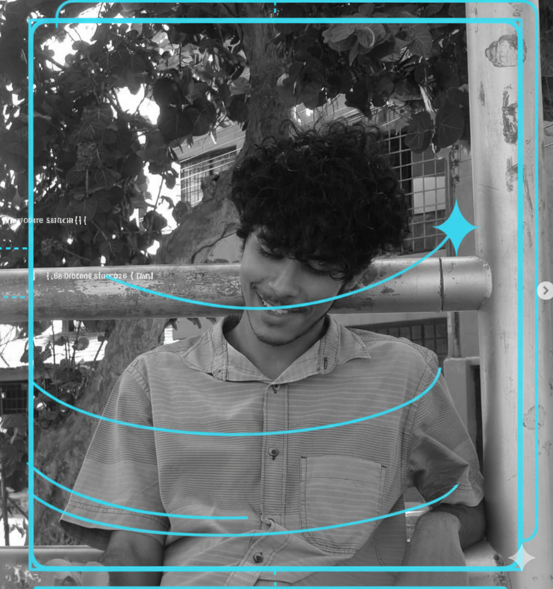

Criando experiências digitais com identidade e propósito
Olá! Sou Rodrigo Dos Santos, entusiasta de programação, fã de fighting games e aceito o seu feedback sobre essa página, vamos conversar? :)
O que aprendi com o curso de HTML e CSS da Alura?
Durante o curso, aprendi o essencial pra construir uma página do zero, desde a estrutura básica com HTML até a estilização com CSS. Compreendi como utilizar tags para organizar o conteúdo, aplicar estilos visuais e criar layouts responsivos. Entre as coisas que mais pratiquei, estão:
- Estruturação de páginas com HTML5
- Estilização com CSS3
- Layouts responsivos
- Boas práticas de desenvolvimento web
Conclusão
Estou animado para aplicar esses conhecimentos em projetos futuros e continuar aprimorando minhas habilidades em desenvolvimento web! Foi uma experiência muito enriquecedora.